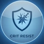
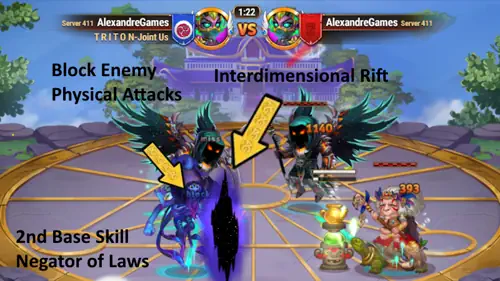
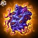
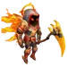

Un ennemi est projeté en l'air, et K'arkh transforme soudain la compétence de contrôle d'un coéquipier en un coup dévastateur. C'est ce moment que je veux vous faire comprendre avant que vous dépensiez vos ressources. Dans Hero Wars: Dominion Era, ses dégâts reposent sur la construction d'une équipe qui continue de projeter les ennemis en l'air pendant qu'il reste en vie pour les punir.
Mon point de départ est simple : renforcer Tentacules mortels, donner à ses dégâts physiques suffisamment de Pénétration d'armure et le protéger jusqu'au début du combo. Je vais détailler ses compétences, ascensions, apparences, glyphes, artefacts, familiers, contres, bannières de guerre et deux équipes, dont le partenariat avec Wodryn qui a bien fonctionné lors de mes tests.


📋 Sommaire de K'arkh
Qui est K'arkh dans Hero Wars: Dominion Era ?
K'arkh est un Guerrier dont l'attribut principal est l'Agilité et qui combat en première ligne. Sa mécanique caractéristique est Tentacules mortels : tant qu'il est en vie, il attaque les ennemis projetés en l'air, y compris lorsque ces projections sont provoquées par des alliés. Cela fait de Kai, Faceless et Wodryn de précieux partenaires. Je le considère comme le principal infligeur de dégâts physiques, qui a besoin de protection et de projections coordonnées.

- Rôle principal : Guerrier
- Attribut principal : Agilité
- Position : Première ligne
- Patronage compatible : Fenris, Mara, Vex
- Pierres d'âme : Coffres d'âmes, Atrium des âmes, Boutique du Tournoi des éléments
Attaque de base : 107 314 dégâts physiques (100% de l'Attaque physique) avant la réduction des dégâts par l'ennemi, avec un temps de recharge de base indiqué de 5,2 secondes.
Évaluation générale de K'arkh dans la méta
Voici mes évaluations de son build et de ses confrontations, fondées sur son contrôle, son potentiel de dégâts, sa synergie et sa dépendance envers ses alliés. Il s'agit d'avis éditoriaux, et non d'un classement fondé sur des taux de victoire mesurés.
- Contrôle : ★★★★☆ — trois cibles avec peu de Santé peuvent être projetées en l'air et étourdies.
- Dégâts : ★★★★★ — un excellent potentiel de dégâts explosifs lorsque les projections fonctionnent et que les défenses physiques sont surmontées.
- Synergie : ★★★★★ — les projections des alliés alimentent directement ses dégâts passifs.
- Autonomie : ★★☆☆☆ — la protection, les projections et le choix des confrontations influencent fortement ses résultats.
Statistiques maximales de K'arkh — Hero Wars: Dominion Era
Ces valeurs de référence d'un build entièrement développé sont présentées sans bonus temporaires de combat ni bonus de patronage des familiers. Elles décrivent un build terminé, et non les statistiques dont un débutant a besoin avant de l'utiliser.
| Statistique | Valeur | Statistique | Valeur |
|---|---|---|---|
| Intelligence | Agilité | ||
| Force | 3 145 | Santé | |
| Attaque physique | Attaque magique | ||
| Armure | Défense magique | ||
| Pénétration d'armure | Précision | 18 021 | |
| Résistance aux coups critiques |  18 021 | Puissance |
Avantages et inconvénients de K'arkh — Hero Wars: Web et Facebook
✅ Avantages
- Transforme ses propres projections et celles de ses alliés en dégâts physiques grâce à Tentacules mortels.
- Les attaques infligeant le double de dégâts aux cibles qui remplissent la condition de niveau du passif offrent un fort potentiel de dégâts explosifs.
- Nexus de l'horreur met sous pression les trois ennemis avec le moins de Santé, donnant à l'équipe un moyen d'achever les cibles vulnérables.
- Négateur des lois combine le blocage physique avec de l'énergie supplémentaire, et Facteur de survie récompense les coups réussis sur les ennemis en l'air par des soins.
- L'Attaque physique améliore ses dégâts principaux et renforce également les valeurs de ses futurs effets d'ascension.
❌ Inconvénients
- Il doit survivre pour déclencher Tentacules mortels ; un build aux dégâts élevés ne peut plus l'aider une fois qu'il est tombé.
- La prévention des projections peut interrompre à la fois ses dégâts et les soins associés aux attaques contre les ennemis en l'air.
- Ses dégâts physiques nécessitent suffisamment de Pénétration d'armure face aux adversaires bien protégés par leur Armure.
- Le blocage physique de la faille est temporaire et dépend d'une probabilité ; il n'offre pas de protection générale contre les dégâts magiques.
- Les effets dépendant du niveau, le blocage du gain d'énergie et le blocage des soins peuvent rendre le combo moins fiable.
- Les améliorations d'ascension arrivent plus tard et ne doivent pas remplacer les investissements dans ses quatre compétences de base.
Priorité d'amélioration des compétences de K'arkh — Hero Wars: Dominion Era
Découvrez comment K'arkh transforme les projections en dégâts, quelles compétences méritent votre or en premier et comment ses ascensions ultérieures améliorent la pression et la survie.
Mon ordre d'amélioration pour les débutants : Tentacules mortels → Nexus de l'horreur → Négateur des lois → Facteur de survie. Gardez les compétences dépendant du niveau proches du niveau des ennemis que vous affrontez. Les fiches ci-dessous conservent leur ordre dans le jeu, et les priorités s'appliquent avant le déblocage des ascensions.
1re compétence — Nexus de l'horreur (Nexus of Horror)
Description dans le jeu : K'arkh projette en l'air les trois ennemis avec le moins de Santé. Lorsque les ennemis touchés retombent, ils sont étourdis pendant 2 secondes. La probabilité d'étourdissement diminue si le niveau de la cible est supérieur à 130.

Explication de la compétence : Cette compétence ultime apporte la projection et un étourdissement de 2 secondes. L'ultime de base n'a pas de formule de dégâts directs ; Tentacules mortels fournit le coup suivant, qui inflige 107 314 dégâts physiques par cible, ou 214 628 lorsque la condition de dégâts doublés s'applique. Considérez Nexus comme la préparation et le passif comme le coup. Ce sont des valeurs de référence avant la réduction des dégâts, et non une quantité de Santé retirée garantie.
Effet : 3 cibles avec le moins de Santé ; étourdissement de 2 secondes à l'atterrissage. Le seuil de niveau affiché pour l'étourdissement est de 130.
Priorité d'amélioration : Très élevée — Maintenez son niveau compétitif pour que l'étourdissement reste fiable. Elle démarre votre propre combo de projection, mais Tentacules mortels est le premier investissement en dégâts, car il fonctionne aussi avec les projections des alliés.
Informations sur l'animation de la compétence
- Type : Ultime
- Cibles : 3
- Durée de l'étourdissement : 2 secondes
Écho de l'horreur (Echo of Horror) — Ascension de rang II
Effet de l'ascension : Après Nexus de l'horreur, une zone apparaît sous l'ennemi avec le moins de Santé et inflige des dégâts chaque seconde pendant 8 secondes. À la troisième amélioration, l'ennemi le plus proche de son centre est projeté en l'air lorsque la zone disparaît.

Explication de la compétence : L'amélioration ajoute une pression continue après la projection initiale. Elle commence à 6 029 dégâts par seconde (4,5% de l'Attaque physique + 1 200), puis passe à 8 039 (6% de l'Attaque physique + 1 600) et 10 156 (7,6% de l'Attaque physique + 2 000). La dernière amélioration conserve 10 156 par seconde et ajoute la projection finale, qui peut déclencher Tentacules mortels tant que K'arkh est en vie. L'attribut utilisé dans la formule est l'Attaque physique ; le texte fourni pour l'effet ne précise pas explicitement le type de dégâts de la zone.
Pourquoi cela compte plus tard : Cela ajoute une deuxième occasion de projeter un ennemi, mais vous devez d'abord débloquer l'ascension et acheter sa dernière amélioration. Ne prévoyez pas une équipe de début de jeu comme si cette projection supplémentaire était déjà disponible.
2e compétence — Négateur des lois (Negator of Laws)
Description dans le jeu : K'arkh ouvre une faille interdimensionnelle qui peut bloquer les attaques physiques ennemies pendant 8 secondes. Il gagne de l'énergie supplémentaire pour chaque attaque bloquée.

Explication de la compétence : Pendant 8 secondes, chaque attaque physique reçue pouvant être bloquée a une probabilité de blocage de 52%. Un blocage réussi fournit également 15,5% d'énergie supplémentaire, ce qui aide K'arkh à atteindre un nouvel ultime. Il s'agit d'un effet défensif et de gain d'énergie, sans formule de dégâts directs. Le blocage n'est pas garanti et ne transforme pas les attaques magiques en attaques physiques pouvant être bloquées.
Formule de la probabilité de blocage : 52% (0,2 × niveau de la compétence + 26).
Formule de l'énergie supplémentaire : 15,5% (0,05 × niveau de la compétence + 9).
Priorité d'amélioration : Élevée — Davantage de blocages favorise la survie et crée plus d'occasions de gagner de l'énergie supplémentaire. Je la place derrière les compétences de projection et de dégâts, mais j'augmente sa priorité si les attaques physiques le tuent avant son premier combo utile.
Informations sur l'animation de la compétence
- Type : Périodique
- Temps de recharge : 18 secondes
- Durée : 8 secondes
3e compétence — Tentacules mortels (Deadly Tendrils)
Description dans le jeu : Tant que K'arkh est en vie, il frappe chaque ennemi projeté en l'air. Si le niveau de l'ennemi est inférieur ou égal à 130, il inflige le double de dégâts. La probabilité d'infliger le double de dégâts diminue si le niveau de la cible est supérieur à 130.

Explication de la compétence : Chaque projection réussie d'un ennemi donne à K'arkh une cible pour ce passif, qu'elle soit provoquée par Nexus, Faceless, Kai ou Wodryn. Chaque coup inflige 107 314 dégâts physiques (100% de l'Attaque physique). Contre un ennemi qui remplit la condition de niveau, cela devient 214 628 dégâts physiques (200% de l'Attaque physique) avant la réduction des dégâts. Une projection de trois cibles remplissant les conditions représente donc 643 884 dégâts physiques bruts au total, répartis entre ces trois cibles.
Formule des dégâts : 107 314 (100% de l'Attaque physique); coup doublé : 214 628 (2 × 107 314).
Priorité d'amélioration : Très élevée — C'est ma première priorité, car elle transforme chaque projection alliée en dégâts. Sa condition de niveau rend l'investissement dans la compétence important, même si la formule d'attaque affichée dépend de l'Attaque physique.
Informations sur l'animation de la compétence
- Type : Passive
- Déclenchement : Un ennemi est projeté en l'air pendant que K'arkh est en vie
- Seuil de niveau pour les dégâts doublés : 130 au niveau de compétence indiqué
4e compétence — Facteur de survie (Survival Factor)
Description dans le jeu : Les attaques contre les ennemis projetés en l'air soignent K'arkh d'une fraction des dégâts infligés.

Explication de la compétence : K'arkh récupère 27,5% des dégâts infligés par les attaques correspondantes contre les ennemis en l'air. La compétence n'inflige pas de dégâts distincts. Si un coup sur un ennemi en l'air inflige réellement 100 000 dégâts physiques, la récupération de base est de 27 500 points de Santé, avant les modificateurs de soins. L'Armure ennemie peut réduire les dégâts qui alimentent ces soins, et le blocage des soins peut réduire la récupération.
Formule des soins : 27,5% (0,25 × niveau de la compétence − 5) des dégâts infligés.
Priorité d'amélioration : Moyenne à élevée — Il faut d'abord des dégâts fiables contre les ennemis en l'air, car ces soins ont besoin de dégâts pour fonctionner. Améliorez-la après le combo principal ; augmentez sa priorité pratique si K'arkh survit à l'ouverture, mais ne peut pas récupérer entre les projections.
Abîme immortel (Immortal Abyss) — Ascension de rang V
Effet de l'ascension : Le déblocage initial ajoute 5% de soins supplémentaires à partir des dégâts infligés; les améliorations portent ce supplément à 7%, puis 10%. La dernière amélioration offre aussi une fuite unique lorsque K'arkh passe sous 20% de Santé: il entre dans l'abîme pendant 2 secondes, évite les attaques ennemies et restaure 100 486 points de Santé (75% de l'Attaque physique + 20 000).

Explication de la compétence : Le supplément de soins renforce le cycle de récupération, tandis que la fuite finale peut donner le temps de lancer un autre combo. Avec le taux de base indiqué, un supplément de 10 points de pourcentage signifie 37,5% de soins (27,5% + 10%). Les soins distincts de la fuite dépendent de l'Attaque physique et ne peuvent être déclenchés qu'une fois par combat. La formule donne 100 485,5 avec 107 314 d'Attaque physique, affichés sous la forme de 100 486.
Pourquoi cela compte plus tard : C'est un filet de sécurité de progression avancée au rang V. Jusqu'au déblocage de sa dernière amélioration, utilisez un tank et des compétences de soutien pour couvrir l'ouverture ; la compétence de base Facteur de survie n'inclut pas la fuite.
Meilleure apparence pour K'arkh — Hero Wars: Dominion Era
Choisissez les apparences de K'arkh selon les problèmes qu'elles résolvent : faites passer ses dégâts physiques à travers l'Armure, améliorez les coups de ses tentacules, puis protégez-le contre les menaces qui le tuent.
Mon ordre général pour les apparences : Stellaire → Céleste / Mascarade → Par défaut → défenses adaptées au combat. Céleste et Mascarade offrent le même bonus de statistique indiqué, donc l'une ou l'autre peut être votre première apparence d'Attaque physique. Améliorez celle par défaut en parallèle lorsque son coût total inférieur convient à vos ressources. Les bonus d'apparence se cumulent une fois débloqués ; l'apparence visuelle est un choix cosmétique.
Apparence par défaut
Gain de statistiques : Agilité +1 365
- Attaque physique provenant de l'Agilité : +4 095
- Armure provenant de l'Agilité : +1 365
Chaque point d'Agilité accorde 2 d'Attaque physique et 1 d'Armure, plus 1 point d'Attaque physique supplémentaire puisque l'Agilité est l'attribut principal de K'arkh.
Priorité d'amélioration : Élevée — Une amélioration mixte efficace : en tant qu'attribut principal, l'Agilité ajoute des dégâts et de l'Armure. Elle est utile au début, tandis que les apparences d'Attaque physique directe offrent un gain final de dégâts supérieur.
Total de Pierres d'apparence d'Agilité pour le niveau maximal :  30 825.
30 825.
Apparence stellaire
Gain de statistiques : Pénétration d'armure +10 650
Priorité d'amélioration : Très élevée — Mon premier objectif offensif contre les ennemis protégés par leur Armure. Des coups de tentacules plus puissants apportent peu si l'Armure les absorbe. Une fois que vous pénétrez déjà l'Armure de la cible visée, l'Attaque physique supplémentaire devient plus utile.
Total de Pierres d'apparence d'Agilité pour le niveau maximal :  55 410.
55 410.
Apparence des profondeurs obscures
Gain de statistiques : Défense magique +10 650
Priorité d'amélioration : Faible — Une défense pour certaines confrontations plutôt qu'une amélioration des dégâts. Donnez-lui une priorité plus élevée si la pression magique est la raison de sa chute ; elle n'améliore pas sa probabilité de blocage physique.
Total de Pierres d'apparence d'Agilité pour le niveau maximal :  55 410.
55 410.
Apparence céleste
Gain de statistiques : Attaque physique +7 095
Priorité d'amélioration : Élevée — Renforce directement les attaques de base et Tentacules mortels, ce qui peut aussi augmenter les dégâts qui alimentent Facteur de survie. Elle améliore également les valeurs des deux formules d'ascension.
Total de Pierres d'apparence d'Agilité pour le niveau maximal :  55 410.
55 410.
Apparence de mascarade
Gain de statistiques : Attaque physique +7 095
Priorité d'amélioration : Élevée — Offre le même bonus indiqué et la même utilité que Céleste. Développez d'abord celle qui est disponible, puis ajoutez l'autre lorsque votre Pénétration d'armure est suffisante.
Total de Pierres d'apparence d'Agilité pour le niveau maximal :  55 410.
55 410.
Apparence solaire
Gain de statistiques : Armure +10 650
Priorité d'amélioration : Moyenne — L'aide à survivre aux attaques physiques en dehors de la faille ou lorsqu'un blocage échoue. Priorisez-la plus tôt lorsque les dégâts physiques explosifs empêchent le combo initial.
Total de Pierres d'apparence d'Agilité pour le niveau maximal :  55 410.
55 410.
Apparence hivernale
Gain de statistiques : Défense magique +21 300
Priorité d'amélioration : Moyenne — Un bonus de Défense magique indiqué plus élevé pour les confrontations magiques difficiles. Ce n'est pas systématiquement le premier investissement à réaliser ; tenez compte de son accès et de son coût d'amélioration avant de comparer sa valeur avec Profondeurs obscures.
Total de Pierres d'apparence d'Agilité pour le niveau maximal :  110 520.
110 520.
Priorité d'amélioration des glyphes de K'arkh
Dépensez les ressources de glyphes là où K'arkh gagne le plus : Pénétration d'armure et Attaque physique d'abord, puis Santé et Armure pour qu'il reste en vie assez longtemps pour frapper.
Mon ordre général pour les glyphes : Pénétration d'armure → Attaque physique → Agilité → Santé → Armure. S'il meurt avant d'attaquer, corrigez d'abord le problème défensif qui le bloque. L'ordre visuel ci-dessous correspond à celui du jeu.

1er glyphe — Santé
Gain de statistiques : Santé +62 200
Priorité d'amélioration : Moyenne à élevée — Une réserve de Santé plus importante l'aide à atteindre son premier combo et laisse de la marge aux soins pour agir. Faites-la passer avant les dégâts lorsque les morts précoces sont le problème.

2e glyphe — Agilité
Gain de statistiques : Agilité +1 135
Priorité d'amélioration : Élevée — Fournit +3 405 d'Attaque physique et +1 135 d'Armure à ce héros d'Agilité, combinant attaque et gain défensif utile.
Conversion de l'Agilité : 1 135 × 3 = +3 405 d'Attaque physique ; 1 135 × 1 = +1 135 d'Armure.

3e glyphe — Attaque physique
Gain de statistiques : Attaque physique +4 340
Priorité d'amélioration : Très élevée — Améliore directement Tentacules mortels et les attaques de base. Augmente aussi les dégâts bruts qui peuvent alimenter les soins liés aux attaques contre les ennemis en l'air.

4e glyphe — Armure
Gain de statistiques : Armure +6 500
Priorité d'amélioration : Moyenne — Utile contre la pression physique lorsque la faille est indisponible ou ne parvient pas à bloquer. Ne peut pas remplacer la Défense magique face aux menaces magiques.

5e glyphe — Pénétration d'armure
Gain de statistiques : Pénétration d'armure +6 500
Priorité d'amélioration : Très élevée — Mon premier glyphe de dégâts contre les cibles protégées par leur Armure, car il aide les coups physiques à atteindre leur potentiel. Mettez l'accent sur l'Attaque physique lorsque l'Armure de la cible est déjà couverte.
Priorité d'amélioration des artefacts de K'arkh — Hero Wars: Dominion Era
Développez les artefacts de K'arkh pour obtenir des dégâts physiques fiables : le livre fournit de la pénétration, l'arme renforce l'équipe et l'anneau ajoute de l'Agilité utile.
Mon ordre général pour les artefacts : Folio de l'alchimiste → Essence de K'arkh → Anneau d'Agilité. Comparez la fiabilité d'activation de l'arme à la valeur permanente du livre ; leurs ressources d'amélioration et leur progression en étoiles sont des aspects distincts.

Artefact d'arme — Essence de K'arkh
Gain de statistiques à l'activation : Attaque physique +33 459 pour l'équipe pendant 9 secondes.
Utiliser Nexus de l'horreur peut déclencher le bonus de l'arme. Sa probabilité d'activation dépend de l'évolution de l'artefact ; traitez le bonus affiché comme un effet temporaire de combat et non comme de l'Attaque physique permanente sur la fiche du personnage.
Priorité d'amélioration : Élevée — Renforce les dégâts physiques de l'équipe pendant la fenêtre de l'ultime, y compris les coups supplémentaires des tentacules tant que le bonus est actif. Rendez l'activation fiable, puis investissez dans le bonus de statistique sans négliger sa propre pénétration.

Artefact de livre — Folio de l'alchimiste
Gain permanent de statistiques : Attaque physique +5 577 et Pénétration d'armure +16 731.
Priorité d'amélioration : Très élevée — Mon premier investissement pour des dégâts continus : les deux statistiques aident le principal infligeur de dégâts physiques à remplir son rôle, et la pénétration est particulièrement précieuse contre les cibles protégées par leur Armure.

Artefact d'anneau — Anneau d'Agilité
Gain de statistiques : Agilité +6 249
- Attaque physique provenant de l'Agilité : +18 747
- Armure provenant de l'Agilité : +6 249
Priorité d'amélioration : Moyenne à élevée — Une augmentation permanente considérable des dégâts, avec de l'Armure en bonus. Je le développe généralement après avoir établi la pénétration du livre et l'utilité de l'arme pour l'équipe.
Meilleur patronage pour K'arkh
Comparez les trois protecteurs compatibles avec K'arkh : Fenris pour un build physique équilibré, Vex pour une pression de dégâts partagée et Mara pour un contrôle plus long.
Mon classement par défaut est Fenris → Vex → Mara pour une équipe construite autour de K'arkh comme principal infligeur de dégâts. Cette recommandation dépend de la confrontation. Un protecteur est attribué à un héros ; le familier actif de l'équipe est un choix distinct.
1re place — Fenris
Fenris: L'Attaque physique et la Pénétration d'armure renforcent ses coups principaux. Rage aveugle donne aux attaques de base 40% de chances d'aveugler un ennemi pendant 2 secondes avec la référence de patronage indiquée. Je choisis Fenris en premier pour ses statistiques de dégâts et sa perturbation utile contre les attaquants physiques. L'aveuglement est lié aux attaques de base ; ne supposez pas que chaque coup de tentacules aveugle aussi.
Probabilité d'aveuglement : 40% (0,32% de la Puissance de patronage + 4,905).
2e place — Vex

Vex: Fournit aussi de l'Attaque physique et de la Pénétration d'armure. Les attaques physiques du propriétaire accumulent jusqu'à cinq charges de Blessures profondes qui expirent après 8 secondes et favorisent les attaques physiques suivantes de tous les alliés contre la cible marquée. Vex devient plus intéressant lorsque plusieurs coéquipiers frappent à répétition les mêmes ennemis ; Fenris reste mon choix par défaut pour les deux équipes ci-dessous.
Dégâts supplémentaires par charge : 5 036 avec la référence de patronage indiquée ; la valeur dépend de la Puissance de patronage.
3e place — Mara

Mara: Fournit de l'Attaque magique et de la Défense magique, qui correspondent moins directement au build du principal infligeur de dégâts physiques. Faiblesse mortelle peut prolonger l'étourdissement après Nexus de l'horreur : une augmentation de durée de 200% transforme les 2 secondes de base en 6 secondes si elle est entièrement appliquée. Elle prolonge l'étourdissement, pas la projection, et ne crée pas de déclenchements supplémentaires de Tentacules mortels.
Augmentation de la durée du contrôle : 200% (1,77% de la Puissance de patronage + 4,45).
Les effets de contrôle que Mara peut prolonger sont répertoriés sur la page officielle de Mara. Le classement ci-dessus reflète la manière dont j'utiliserais ces effets avec K'arkh.
Comment contrer K'arkh dans Hero Wars: Dominion Era
Les contres les plus utiles interrompent ses projections, retardent son ultime ou punissent l'énergie supplémentaire qu'il gagne. Faites votre choix en tenant compte de toute l'équipe adverse : aucun héros ne garantit à lui seul une victoire contre toutes les formations de K'arkh.

Andvari
Terre vivante protège Andvari et son allié le plus proche contre les déplacements et les projections, en donnant la priorité à l'allié situé devant lui. Une projection empêchée supprime le coup correspondant de Tentacules mortels et l'occasion de soin associée. Positionnez cette protection autour d'une cible importante : dans Dominion Era, elle ne protège pas tous les alliés derrière Andvari. Référence officielle du héros.

Jorgen
Le blocage du gain d'énergie peut retarder Nexus de l'horreur et la fenêtre du bonus de l'arme. K'arkh doit alors attendre les projections alliées au lieu de lancer son propre combo. Gardez Jorgen en vie assez longtemps pour appliquer l'effet et rappelez-vous que retarder l'ultime ne désactive pas les attaques passives déclenchées par Faceless ou Wodryn. Référence officielle du héros.

Satori
Négateur des lois récompense les blocages réussis par de l'énergie supplémentaire, ce qui expose K'arkh aux marques supplémentaires de Feu du renard de Satori. Satori transforme ensuite les marques accumulées en dégâts magiques. Ce contre demande du temps et une détonation réussie ; tuer ou neutraliser Satori avant cela peut changer l'issue. Référence officielle du héros.
Meilleures bannières de guerre de K'arkh — Hero Wars: Dominion Era
Choisissez une bannière de guerre pour toute la formation de K'arkh : renforcez la défense initiale, améliorez les soins ou réduisez les soins reçus par les cibles que votre équipe doit achever.

Bannière de guerre du Bastion
Effet : Au début du combat, les alliés gagnent une Armure équivalant à 30% de celle du héros de tête ; l'effet diminue jusqu'à 5% en 20 secondes. Chaque motif rouge prolonge l'effet de 3 secondes.
Avantage pour K'arkh et l'équipe : Mon choix par défaut contre la pression physique initiale dans ces équipes menées par des tanks. Elle donne à K'arkh le temps d'atteindre un combo de projection, en utilisant l'Armure du tank de tête comme référence. Évaluez l'Armure de ce tank et la pénétration ennemie avant de la choisir.

Bannière de guerre de la Récupération
Effet : Augmente tous les soins de 10%.
Avantage pour K'arkh et l'équipe : Renforce les soins de Martha et Facteur de survie de K'arkh, ce qui en fait un choix pratique lorsque l'équipe survit à l'ouverture, mais perd les échanges prolongés. Elle ne permet pas de recevoir des soins bloqués ; évaluez-la donc en fonction du blocage des soins adverse.
Bannière de guerre du Déclin
Effet : Réduit les soins de l'équipe ennemie de 10%.
Avantage pour K'arkh et l'équipe : Aide à empêcher les cibles avec peu de Santé de récupérer entre les fenêtres de projection. Je l'envisage lorsque les soins ennemis sont l'obstacle et que ma propre équipe dispose déjà d'une protection suffisante.
La position compte : K'arkh est un Guerrier de première ligne, mais Wodryn ou Astaroth se tient devant lui dans les équipes ci-dessous. Une bannière qui cible le héros le plus avancé profite donc directement à ce tank. Préparation cible le héros le plus reculé, Martha dans ces formations, et ne donnerait donc pas directement son énergie à K'arkh.
Meilleures équipes pour K'arkh — Hero Wars: Dominion Era
Voici les deux formations que je commencerais à tester. Les tableaux montrent l'arrière-garde à gauche et le tank de tête à droite, avec chaque protecteur au-dessus de son héros. Axel est le familier actif de l'équipe dans les deux cas ; son affectation de patronage est indiquée séparément.
Pourquoi ces protecteurs : Fenris apporte de la puissance offensive physique à K'arkh. Merlin accélère les compétences de dégâts magiques de Faceless, y compris sa compétence de projection, ce qui permet de préparer le combo plus souvent. Oliver améliore la résistance de Jorgen, tandis que l'énergie supplémentaire périodique de Robin aide Martha à atteindre son ultime. Le patronage d'Axel limite les dégâts des puissantes attaques individuelles contre le tank de tête. Distinguez les compétences d'équipe du familier actif de ces effets individuels de patronage.
Analyse de l'équipe nº 1 — Synergie des projections de Wodryn
Formation : Wodryn (Axel), K'arkh (Fenris), Jorgen (Oliver), Faceless (Merlin), Martha (Robin). Familier actif : Axel. Bannière de départ : Bastion contre la pression physique initiale.
| Familier de l'équipe / Bannière | Arrière-garde | Soutien | Soutien | Dégâts principaux | Tank de tête |
|---|---|---|---|---|---|
| Familier actifAxel | Protecteur | Protecteur | Protecteur | ProtecteurFenris | ProtecteurAxel |
| Bannière de guerre |
C'est le partenariat qui s'est distingué lors de mes tests : Wodryn peut projeter les ennemis et alimenter Tentacules mortels de K'arkh. Faceless fournit une autre source de projection, donnant au principal infligeur de dégâts des occasions au-delà de son propre ultime. Jorgen met la pression sur l'énergie ennemie, tandis que Martha soutient le combat plus long dont l'équipe peut avoir besoin pour préparer ses combos.
Comment je la jouerais : Protégez K'arkh pendant le premier échange, puis observez si Wodryn et Faceless projettent réellement des cibles qu'il peut frapper. Les attaques de base critiques de Wodryn qui remplissent les conditions peuvent projeter les ennemis ; ne supposez pas que chaque coup critique des racines ou des épines fait de même. Utilisez la fenêtre du bonus de l'arme pour obtenir des coups physiques suivants plus puissants et passez à Récupération lorsque l'endurance est la véritable limite.
Ce que je surveillerais : Andvari peut protéger des ennemis importants contre les projections, et le blocage du gain d'énergie peut retarder votre propre ouverture. Si K'arkh meurt avant le premier combo, augmentez sa résistance réelle avant de rechercher un chiffre de dégâts plus élevé. Maintenez les niveaux de Wodryn et de Faceless compétitifs pour que la préparation soit fiable.
Analyse de l'équipe nº 2 — Protection d'Astaroth
Formation : Astaroth (Axel), K'arkh (Fenris), Jorgen (Oliver), Faceless (Merlin), Martha (Robin). Familier actif : Axel. Bannière de départ : Récupération lorsque l'ouverture est stable et que les soins comptent.
| Familier de l'équipe / Bannière | Arrière-garde | Soutien | Soutien | Dégâts principaux | Tank de tête |
|---|---|---|---|---|---|
| Familier actifAxel | Protecteur | Protecteur | Protecteur | ProtecteurFenris | ProtecteurAxel |
| Bannière de guerre |  Astaroth |
J'utilise cette version lorsque je veux disposer des compétences de protection et de la résurrection d'Astaroth autour du principal infligeur de dégâts. Faceless reste la principale source alliée de projection, K'arkh ajoute son propre ultime, et Jorgen avec Martha apporte du contrôle et de la récupération à l'équipe. La résurrection d'Astaroth peut sauver un allié, mais elle n'est pas réservée à K'arkh ; surveillez donc qui la consomme.
Comment je la jouerais : Donnez à l'équipe suffisamment de protection initiale pour atteindre sa première projection, puis laissez Martha et Facteur de survie restaurer la Santé perdue. Récupération renforce ce plan. Choisissez plutôt Bastion lorsque les dégâts physiques précoces brisent la formation avant que les soins puissent aider.
Ce que je surveillerais : Remplacer Wodryn supprime cette possibilité supplémentaire de projection ; vous dépendez donc davantage de Faceless et de Nexus de l'horreur. Cette formation a toujours besoin de suffisamment de Pénétration d'armure et d'un plan contre les ennemis qui empêchent les projections. Testez les deux versions contre la défense réelle au lieu de considérer l'une ou l'autre comme une victoire automatique.
Mes derniers conseils pour développer K'arkh
Si je développais K'arkh depuis le début, j'investirais de l'or dans Tentacules mortels et Nexus de l'horreur, j'établirais la Pénétration d'armure grâce au livre, au glyphe et à l'Apparence stellaire, puis j'améliorerais l'Attaque physique. Je corrigerais les problèmes de survie initiale dès leur apparition, car son passif a besoin qu'il reste en vie pour transformer les projections alliées en dégâts.
Commencez avec Fenris et une formation protégée, puis comparez la synergie de projections supplémentaire de Wodryn à la sécurité offerte par Astaroth. Les ascensions apportent au build plus de pression et une fuite ultérieure, mais les bases restent les mêmes : garder K'arkh en vie, projeter un ennemi et faire en sorte que ce coup ait un véritable impact.
Découvrez de nouvelles compétences avec nos héros à l'honneur !
 Guide d'Eva – L'héroïne de soutien de Hero Wars Dominion Era
Guide d'Eva – L'héroïne de soutien de Hero Wars Dominion Era
 Guide de Wodryn – Le tank de Hero Wars Dominion Era
Guide de Wodryn – Le tank de Hero Wars Dominion Era
Donnez votre avis !
Quelle formation de K'arkh fonctionne pour vous : la synergie des projections de Wodryn ou la protection d'Astaroth ? Partagez votre expérience ou posez une question sur une confrontation difficile dans les commentaires.